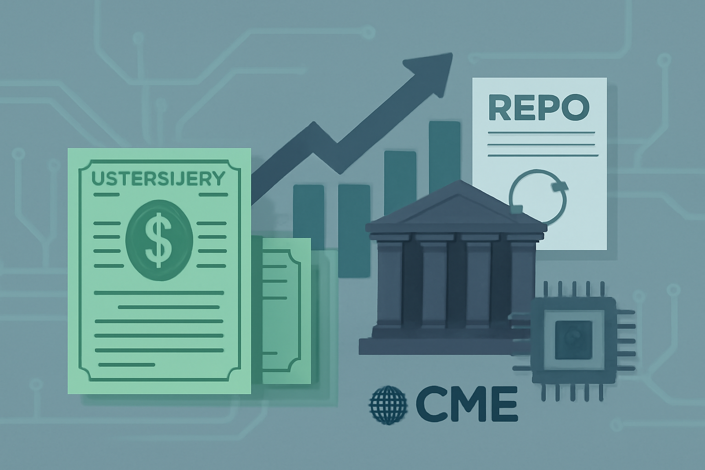

04 Finadium 보도일 2026.09.11
미국 국채·레포 청산, CME가 12월 개시

이 기사도 CME의 새 청산소 출범 계획을 다뤘다. 앞선 기사와 핵심 사실은 같지만, 증거금 상계 효과와 시장 배경을 조금 더 짚었다. 발췌 범위는 길지 않아 확인 가능한 내용만 정리한다.
무슨 일이 있었나
CME Group은 2026년 12월 7일 CME Securities Clearing을 출범할 계획이라고 밝혔다. 이 청산소는 미국 국채 현금거래와 레포 거래를 청산한다. 목적은 SEC의 중앙청산 의무에 맞추는 데 있다.
CME는 새 청산소가 'done-with'와 'done-away' 집행·청산을 모두 지원한다고 밝혔다. 청산회원과 독립 이용자는 현물 국채, 레포, CME 금리선물에 걸친 자본 효율을 높일 수 있다.
- 적격 기업은 두 청산소에 걸친 적격 포지션의 증거금을 상계할 수 있다.
- CME는 기존 FICC와의 상계 구조가 하루 20억달러 이상의 증거금 절감 효과를 낸다고 밝혔다.
- CME는 미국 부채 규모가 40조달러라고 언급했다.
왜 지금 나왔나
SEC의 중앙청산 의무 시한이 다가오고 있다. CME는 그 시점에 맞춰 새 청산소를 내놓겠다고 밝혔다.
발췌에는 직전 경과도 짧게 보인다. 2024년 10월에는 UST 레포 청산 제안이 언급됐고, 2026년 3월과 7월에는 시장 명확성과 청산 레포 거래 규모를 다룬 관련 보도가 이어졌다.
제도와 시스템에서 바뀌는 것
시장 참가자는 미국 국채 현금과 레포를 청산할 때 CME 경로를 추가로 쓸 수 있게 된다. CME는 이를 기존 상계 구조와 함께 운영한다.
실무상 변화는 증거금 계산과 포지션 묶음에서 먼저 나타날 가능성이 크다. 현물 국채와 레포, 금리선물 포지션을 함께 보고 증거금을 줄일 수 있기 때문이다. 다만 원문 발췌에는 회원 요건, 수수료, 담보 종류 같은 세부 조건이 여기까지만 나온다.
국내와의 접점
원문은 국내 적용에 대해 언급하지 않았다.
우리 업무로 옮기면
청산 경로가 늘면 주문 체결 시스템보다 포스트트레이드 시스템이 먼저 바뀐다. 청산회원 연결, 거래 배분, 담보 관리, 증거금 계산이 모두 영향을 받는다.
확인할 질문은 다음과 같다.
- 국채 현금과 레포를 어느 청산소로 보낼지 자동화할 수 있는가
- 선물 포지션까지 반영한 상계 계산을 내부 리스크 화면에 넣을 수 있는가
- 고객 보고서와 회계 처리에서 청산소별 데이터를 분리할 수 있는가
- 장애 때 대체 청산 경로를 준비할 것인가
이번 발췌만으로는 구현 일정과 외부 연결 규격을 알 수 없다. 대외계 개발 착수 전에는 청산소 기술 문서와 회원 온보딩 조건을 먼저 받아야 한다.
주요 용어
원문 정보
제목: CME to launch UST and UST repo clearing in December
보도일: 2026.09.11
출처 URL: https://finadium.com/cme-to-launch-ust-and-ust-repo-clearing-in-december/